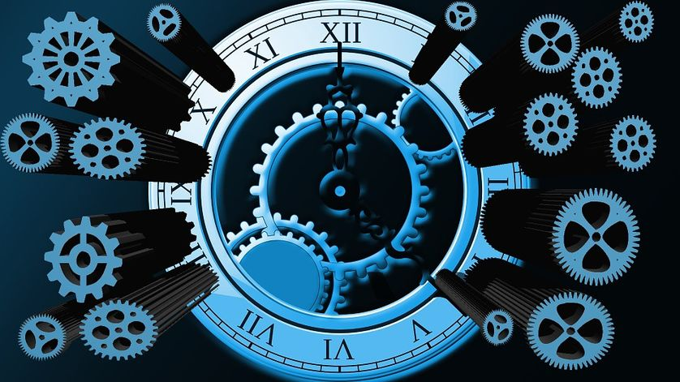

Année
Voici la page de présentation du fil rouge
- Mon rôle narrateur ALIXIAN
- Rôle narrateur2 JULIEN
- Rôle complot ARNIS
- Rôle Médecine SIMON
- Rôle jeux vidéo ALEXANDRE
- Rôle musique MOHAMED
- Rôle économie MAXIME
- Rôle art peinture CAROLINE
- Rôle hackeur THOMAS
- Rôle principale ALY
Le théme principale et le voyage temporel grâce a une machine qui permet de remonter dans le temps.

Le temps minimum pour exposer ce projet et de 15minutes
Chaque personnage aura une année précise dans le déroulement de l'histoire:
- 1945
- 1947
- 1955
- 1960
- 1970
- 2000
- 2016